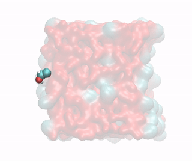
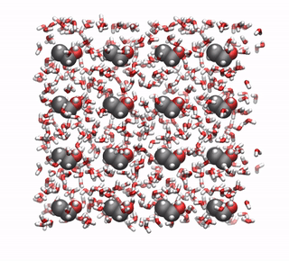

Left: Ethanol molecule being pulled from a water/ethanol mixture into the vapor phase. Right: Corresponding PMF profile. The liquid phase is in x < 1.5 nm, and the interface in x = 1.5 nm.
The objective of this tutorial is to use GROMACS to perform a molecular dynamics simulation, and to calculate the free energy of adsorption of a ethanol at the water-vapor interface.
If you are new to GROMACS, I suggest you to follow this simpler tutorial first.
Click here to contact me.
Create two folders named 'preparation/' and 'adsorption' in the same directory. Go to 'preparation/'.
Download the configuration files for the HBC molecule
First, let us convert the pdb file into a gro file consisting of a single ethanol molecule at the center of a small box using trjconv:
gmx trjconv -f BIPQ_allatom_optimised_geometry.pdb -s BIPQ_allatom_optimised_geometry.pdb -box 0.8 0.8 0.8 -o single_ethanol.gro -center
Select 'system' for both centering and output. If you open the single_ethanol.gro file with VMD, you will see:
Ethanol molecule with carbon atoms in gray, oxygen atom in red, and hydrogen atoms in white.
In order to create a system with several ethanol molecule, let us replicate the single molecule (4x4x4 times) using genconf:
gmx genconf -f single_ethanol.gro -o replicated_ethanol.gro -nbox 4 4 4
If you open the replicated_ethanol.gro file with VMD, you will see:
Replicated ethanol molecules with carbon atoms in gray, oxygen atom in red, and hydrogen atoms in white.
From the same atb page, copy the 'GROMACS All-Atom (ITP file)' [tofix] and place it in a folder named 'ff/' and located within the 'preparation/' folder. Within 'ff/' download as well the GROMACS top file named Gromacs 4.5.x-5.x.x 54a7 containing all the force field parameters. Copy as well the h2o.itp file for the water molecules in the 'ff/' folder. Then, let us write the topology file by simply creating a blank file named 'topol.top' within the 'preparation/' folder, and copying in it:
#include "ff/gromos54a7_atb.ff/forcefield.itp" #include "ff/BIPQ_GROMACS_G54A7FF_allatom.itp" #include "ff/h2o.itp" [ system ] Ethanol molecules [ molecules ] BIPQ 64
Let us add water molecules. First download the tip4p water configuration file here, and copy it in the 'preparation/' folder. Then, in order to add (tip4p) water molecules to both gro and top file, use the gmx solvate command as follow:
gmx solvate -cs tip4p.gro -cp replicated_ethanol.gro -o solvated.gro -p topol.top
In my case, 858 water molecules with residue name 'SOL' were added.
There should be a new line 'SOL 858' in the topology file 'topol.top':
[ molecules ] BIPQ 64 SOL 858
The created 'solvated.gro' file contains the positions of both Ethanol and water molecules:
Replicated ethanol molecules within water.
Since we want to simulate a liquid-vapor system, let us increase the box size along the x direction to create the vacuum part:
gmx trjconv -f solvated.gro -s solvated.gro -box 6.4 3.2 3.2 -o solvated_vacuum.gro -center
Select 'system' for both centering and output. If you encountered a problem during file generation, you can also download the file I have generated by clicking here.
Create a new folder in the preparation/' folder, call it 'inputs', and save the min.mdp and the npt.mdp files into it.
These 2 files have been seen in previous tutorials. Apply the minimisation to the solvated box using :
gmx grompp -f inputs/min.mdp -c solvated_vacuum.gro -p topol.top -o min -pp min -po min -maxwarn 1 gmx mdrun -v -deffnm min
Here the '-maxwarn 1' allows us to perform the simulation despite GROMACS' warning about some issue with the force field. Let us visualize the atoms' trajectories during the minimization step using VMD by typing:
vmd solvate_vacuum.gro min.trr
This is what I see:

Movie showing the motion of the atoms during the energy minimization. The two fluid/vacuum interfaces are on the left and or the right sides, respectively. Note for VMD user: You can avoid having molecules 'cut in half' by the periodic boundary conditions by rewriting the trajectory using 'gmx trjconv -f min.trr -s min.tpr -o min_whole.trr -pbc whole'
Let us perform a NVT equilibration in order to reach the equilibrium ethanol/water density profile:
gmx grompp -f inputs/nvt.mdp -c min.gro -p topol.top -o nvt -pp nvt -po nvt -maxwarn 1 gmx mdrun -v -deffnm nvt
When its done, extract the density profile along x using the following command:
gmx density -f nvt.xtc -s nvt.tpr -b 50 -d X -sl 100 -o density_end_ethanol.xvg
and choose 'non_water' for the ethanol. The '-b 50' keyword is used to disregard the 50 first picoseconds of the simulation, the '-d X' keyword to generate a profile along x, and the '-sl 100' keyword to divide the box into 100 frames. Warning: The current equilibration time and for the NVT run (100 ps) is too small. It has been chosen to make the tutorial easier to follow for people with a bad laptop (myself included). Increase the duration to 1 nanosecond for a better equilibrated system. Alternatively, download the final configuration I have generated after a 1 ns run by clicking here.
The density profile I get for both water and ethanol during the last 500 ps of the 1 ns run is :
Water and ethanol density profile along x.
Discussion: The density profiles show an excess of ethanol at the 2 interfaces, which is expected as ethanol is known to be amphiphilic. There is also a local maxima in the center of the fluid layer (near x = 3 nm), and two depletion area in between the center of the fluid layer anf the two interfaces.
To calculate the free energy profile across the liquid/vapor interface, one needs to impose an additional harmonic potential to one ethanol molecule, and force it to explore certain region of the box, including the energeticaly unfavorable vacuum phase. Ultimately, a large number of positions for the ethanol molecule need to be calculated. For the sake of testing our protocole, let us first test our protocile using one single position for the center of the harmonic potential. Next to 'preparation/', create a folder called 'singleposition/'. Within 'singleposition/', create a folder named 'inputs', and copy min.mdp, nvt.mdp, and pro.mdp, in it.
In all 3 mdp files, there is the following lines:
pull = yes pull-nstxout = 1 pull-ncoords = 1 pull-ngroups = 2 pull-group1-name = ethanol_pull pull-group2-name = water pull-coord1-type = umbrella pull-coord1-geometry = distance pull-coord1-dim = Y N N pull-coord1-groups = 1 2 pull-coord1-start = no pull-coord1-init = 2 pull-coord1-rate = 0.0 pull-coord1-k = 1000
Explanations: These lines specify the additional harmonic potential to be applied between a group name 'ethanol_pull' (still to be defined) and 'water'. The spring constant of the harmonic potential is 1000 kJ/mol/nm2, and the requested distance between the center-of-mass of the two groups is 2 nm along the x dimension. Let us create an index file :
gmx make_ndx -f ../preparation/nvt.gro -o index.ndx
or (if you choose to used this file)
and type:
a 2 name 6 ethanol_pull
These commands create a index file containing a new group named 'ethanol_pull' made of only 1 atom: the atom with index 2 which is an oxygen atom of one of the first ethanol molecule in the list. We don't care here where this molecule is located in the box. You can ensure that the atom of index 2 is indeed an oxygen of an ethanol molecule by looking at the top of the nvt.gro (or nvt_1ns.gro) file:
Ethanol molecules in water 4008 1BIPQ H6 1 1.679 0.322 1.427 -1.2291 -2.8028 -0.6705 1BIPQ O1 2 1.617 0.317 1.501 -0.1421 -0.1303 0.4816 1BIPQ C2 3 1.549 0.441 1.496 -0.4726 -0.1734 0.4272 1BIPQ H4 4 1.453 0.450 1.548 -0.2059 -0.1001 0.9069 1BIPQ H5 5 1.529 0.454 1.390 -0.7133 0.0381 0.4988 1BIPQ C1 6 1.641 0.548 1.542 0.1500 -0.4454 -0.2006 1BIPQ H1 7 1.600 0.646 1.516 0.5688 -0.5292 -1.1624 1BIPQ H2 8 1.734 0.549 1.486 -1.4595 1.2268 -2.9589 1BIPQ H3 9 1.652 0.548 1.651 -2.4175 0.8229 0.1142 (...)
Run all 3 inputs successively:
gmx grompp -f inputs/min.mdp -c ../preparation/nvt_1ns.gro -p topol.top -o min -pp min -po min -maxwarn 1 -n index.ndx gmx mdrun -v -deffnm min /gmx grompp -f inputs/nvt.mdp -c min.gro -p topol.top -o nvt -pp nvt -po nvt -maxwarn 1 -n index.ndx gmx mdrun -v -deffnm nvt gmx grompp -f inputs/pro.mdp -c nvt.gro -p topol.top -o pro -pp pro -po pro -maxwarn 1 -n index.ndx gmx mdrun -v -deffnm pro
During minisation, the ethanol molecule is separated from the rest of the fluid until the distance between the center-of-mass of the 2 groups is 2 nm:
Ethanol molecule being pulled from the rest of the fluid during minimisation and nvt equilibration.
Then, during the production run, the average distance between the 2 groups is measured over time. Let us plot the histogram of this distance, toghether with the distribution for longer production run (if you have a good computer, feel free to run longer production run than 50 ps):
Probability distribution of the distance between the two center-of-mass. Short (50 ps) and long (1.5 ns) runs are compared.
The distribution is not centered around x = 2 nm because of the interaction between the CO2 and the rest of the fluid.
Let us replicate the previous calculation for 30 differents distances, from x = 0 (the ethanol molecule is forced to remain at the center of the liquid) to x = 4 (the ethanol molecule is far within the vacuum phase). Create a new folder, call it 'adsorption/', and copy min.mdp, nvt.mdp, and pro.mdp, in it. The only difference with the previous input scripts, is the command:
pull-coord1-init = to_be_replaced
where the keyword 'to_be_replaced' is to be systematicaly replaced within a bash script. Create a bash script, call it 'run.sh', and copy the following lines in it:
#!/bin/bash set -e for ((i = 0 ; i < 30 ; i++)); do x=$(echo "0.13*$(($i+1))" | bc); sed 's/to_be_replaced/'$x'/g' inputs/min.mdp > min.mdp gmx grompp -f min.mdp -c ../preparation/nvt_1ns.gro -p topol.top -o min.$i -pp min.$i -po min.$i -maxwarn 1 -n index.ndx gmx mdrun -v -deffnm min.$i sed 's/to_be_replaced/'$x'/g' inputs/nvt.mdp > nvt.mdp gmx grompp -f nvt.mdp -c min.$i.gro -p topol.top -o nvt.$i -pp nvt.$i -po nvt.$i -maxwarn 1 -n index.ndx gmx mdrun -v -deffnm nvt.$i sed 's/to_be_replaced/'$x'/g' inputs/pull.mdp > pull.mdp gmx grompp -f pull.mdp -c nvt.$i.gro -p topol.top -o pull.$i -pp pull.$i -po pull.$i -maxwarn 1 -n index.ndx gmx mdrun -v -deffnm pull.$i done
Copy the previously created index file and topology file within the 'adsorption/' folder, and execute the bash script. When the simulation is done, create 2 files (credit to the excellent gaseri site)
ls prd.*.tpr > tpr.dat
and:
ls pullf-prd.*.xvg > pullf.dat
Finally, perform the analysis using the WHAM command of GROMACS:
gmx wham -it tpr.dat -if pullf.dat
A file named "profile.xvg" must have been created, and it should contain a PMF profile resembling the red curve below:
PMF for the ethanol molecule accross the interface between a water/ethanol mixture and vapor.
Note: Runs of 100 ps as done in this tutorial are too short to obtain a proper result. Increase the duration of the production runs to a few nanoseconds to obtain a proper PMF (like the blue curve in the figure above). Explanation: The PMF shows a plateau inside the bulk liquid (x<1 nm), a minimum at the interface (x=1.5 nm), and increase in the vapor phase (x>1.5 nm). The minimum at the interface indicate that ethanol favorably adsorb at the liquid/vapor interface, which is consistent with the density profile. The PMF also indicates that, once adsorbed, the ethanol molecule requires an energy of about 5 kJ/mol to re-enter the liquid phase (looking at the blue curve), which is about 2.2 kBT. Finally the PMF shows that it is energetically costly for the ethanol molecule to fully desorb and go into the vacuum phase as the energy barrer to overcome is at least 25 kJ/mol. Consistently, when performing MD simulation, it is rare to observe an ethanol molecule exploring the vapor phase.